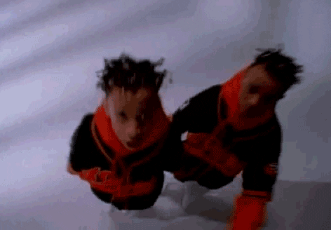

"Jump" - Kriss Kross
"Jump" is the hit debut single by American hip hop duo Kris Kross. It was released on February 6, 1992, as a single from their debut studio album Totally Krossed Out. It achieved international success, topping charts in Switzerland, Australia, and the United States. Additionally, it was the third best-selling song in the United States in 1992 with sales of 2,079,000 physical copies that year. "Jump" was written and produced by Jermaine Dupri. Chris "Mac Daddy" Kelly and Chris "Daddy Mac" Smith were only twelve and thirteen years old when they recorded the song. The song samples "I Want You Back" by The Jackson 5, "Funky Worm" by Ohio Players, "Impeach the President" by The Honey Drippers, "Midnight Theme" by Manzel, "Escape-Ism" by James Brown, "Saturday Night" by Schoolly D, and a replay of "O.P.P." by Naughty by Nature. At the beginning of their song they dissed another kid group Another Bad Creation when Chris "Mac Daddy" Kelly said "don't try to compare us to another bad little fad".
